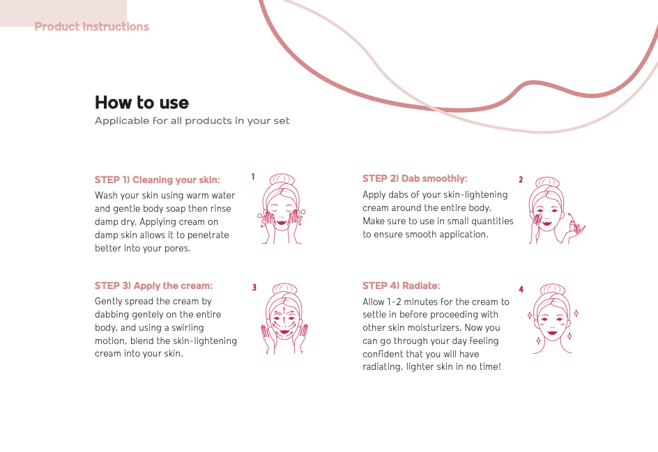
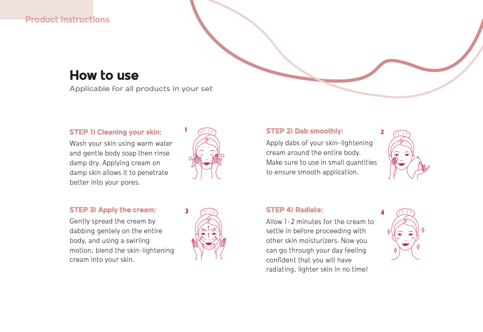

01 - Critical Design
B-Lighten Lab
We live in a world where the beauty industry capitalizes on the biases of skin color representing our social status and as we move towards a monotone world due to skin-lightening becoming the norm, we will experience a disrupt in the social and psychological aspects of our lives. Skin lightening is a dangerous process entailing whitening creams with harmful ingredients that affect a lot of darker-skinned women, specifically, African and African-American women. The beauty industry is notorious for capitalizing on this issue as skin color represents one’s social status. However, these lightening creams come with side effects due to its harmful ingredients and its temporality - it requires continuous use to maintain a lighter skin which leads to long term skin damage.
My Roles: Topic Research / Graphic Design / Product Design
Tools: Figma / Adobe Illustrator / Adobe Photoshop
Our Goal
The design attempts to show how beauty companies profit on the fact that most darker-skinned women, unfortunately, succumb to the beauty standards of “fairer skin” being seen as the ideal look, and constantly purchasing controversial beauty products.
Our Message
All skin colors are as unique and glamourous as they are. Our team does not support companies that capitalize on the beauty standards of lighter skin being seen as better. These products contain ingredients that could cause serious skin and psychological damage, and should be avoided at all costs.
 


02 - Material Design
Scrapon
For homeless women, it is extremely challenging for them to stay sanitized during their period because of limited access to pads and tampons among other conditions, such as lack of a comfortable place to shower. Our team believes the lack of access to sanitary products for homeless women is a devastating and overlooked healthcare injustice that needs to be rectified.
My Roles: Topic Research / Graphic Design
Tools: Figma
Our Goal
Under the provocation of wealth and inequality, we want to encourage material speculation of tampons by changing their perception from sanitary to unsanitary. Through this method, women with access to menstruation products can experience what homeless women experience without access to such items.
Our Message
Scrapon encourages exploration of the experience that homeless women face without access to proper sanitary products. We want our audience to understand how uncomfortable this experience is so they can understand the need for homeless women to have access to proper sanitary products.
03 - Ludic Design
Minimīz
This minimalist catalog magazine is designed to tackle the overconsumption of fast fashion clothing, one of the fastest-growing waste products in landfills. We want to raise awareness of the idea that consumers are attracted to cheap, quickly produced clothing, overlooking whether the clothing is necessary to purchase. This concept of “blind consumption” has led to an inherent outcome of increased waste and unworn clothing within this economy.
My Roles: Topic Research / Image Edit
Tools: Figma / Adobe Photoshop
Our Goal
Our goal is to spread awareness of the overconsumption culture to consumers who frequently indulge in the cycle of fast fashion. People who purchase trendy, inexpensive, yet unnecessary clothes for the sake of its cheap price tag and staying in style are prone to creating clutter in their household, therefore contributing to the wasteful clothing consumption.
Our Message
Minimīz’s haf storage system serves as a curious multi-use household storage unit, disguised both as a modern shelf and clothing hanger. This retrospective tool is designed to emphasize the importance of modest closet upkeep over an extended period of time. The Haf storage unit attempts to encourage people to rethink impulsive purchases by giving clothing items personalities. The longer an item of clothing is left on a hanger, the more intense it wiggles. This design allows the owner of the clothing to have a visual representation of time spent without using that certain item.